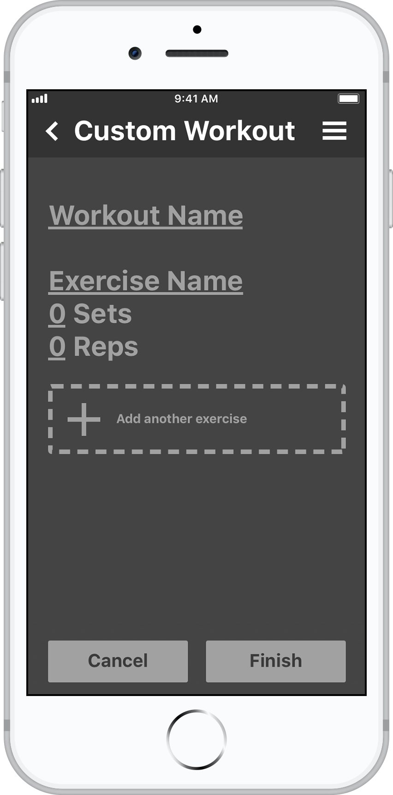
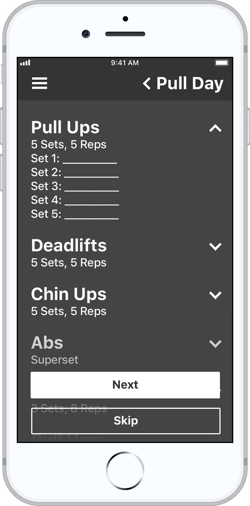
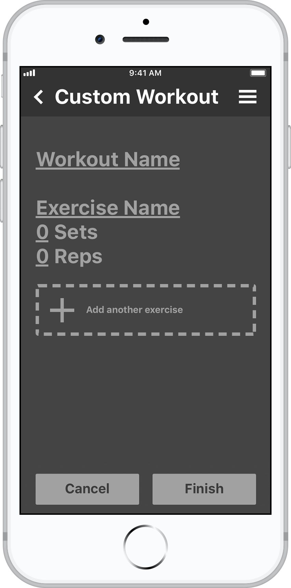
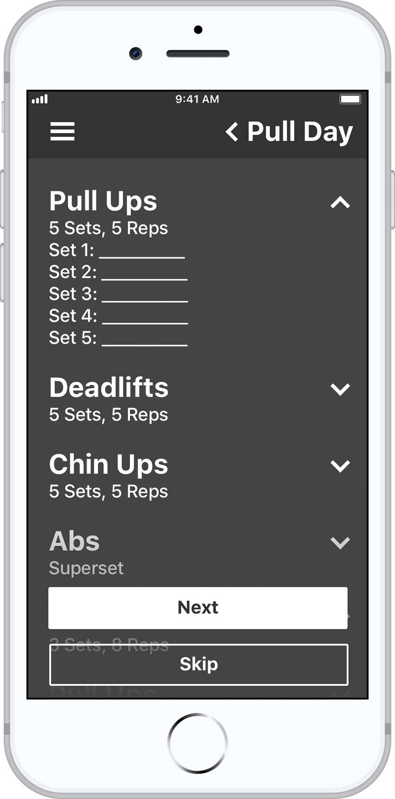

Visual Design
Because the use case for the app is usually within the gym, I wanted to design the app to be as clear and readable as possible. This thought led to the app being heavily organized by typography and stark color contrasts.
Humans typically can read one "fixation" in 225 milliseconds. A fixation is the period where your eye is resting in one spot; the period before it darts to another. I tried to take advantage of this and make the app easily digestible by using typographical hierarchy as best I could. By creating a design system of large titles and categories, any given page on Lift can be navigated by the human eye within seconds. This means the user can focus on the area needed and quickly fill in information without pausing their workout.
Gathering information quickly also made it's way into my color choices. The decision to be white text on dark grey was chosen to put less strain on the eyes and make it easier for the user to see the text clearly. I found in my earlier designs that large blocks of dark text on a white background would obscure some of the smaller text
Interaction Design
With the goal of efficiency in mind, the interaction design of the app tries to make it so that the user can ideally navigate all the happy path scenarios with one hand. The app is defaulted with right handed users in mind, although there is a switch in the settings page that allows users to specify their dominant hand. The presence of underlines and arrows are visual cues to the user that certain parts of the screen are interactive and other parts are simply information.
 



Improvements for the Future
Given that this was a three day exercise, there are many improvements that I would make. Regarding the clarity of interaction, I don't think there's enough indicating that some things are interactive and some things are not. The only difference between a header and an interactive title is an arrow, and I think a difference of color or something would benefit it greatly. I would also like to flesh out a lot of the features that I feel are a little plain. The progress graphs for instance could have much more interactivity. A filtering system or just simply better data visualization could take the app to the next level. Be on the lookout for more changes, I will definitely revisit this and do a more feature-packed version in the future.